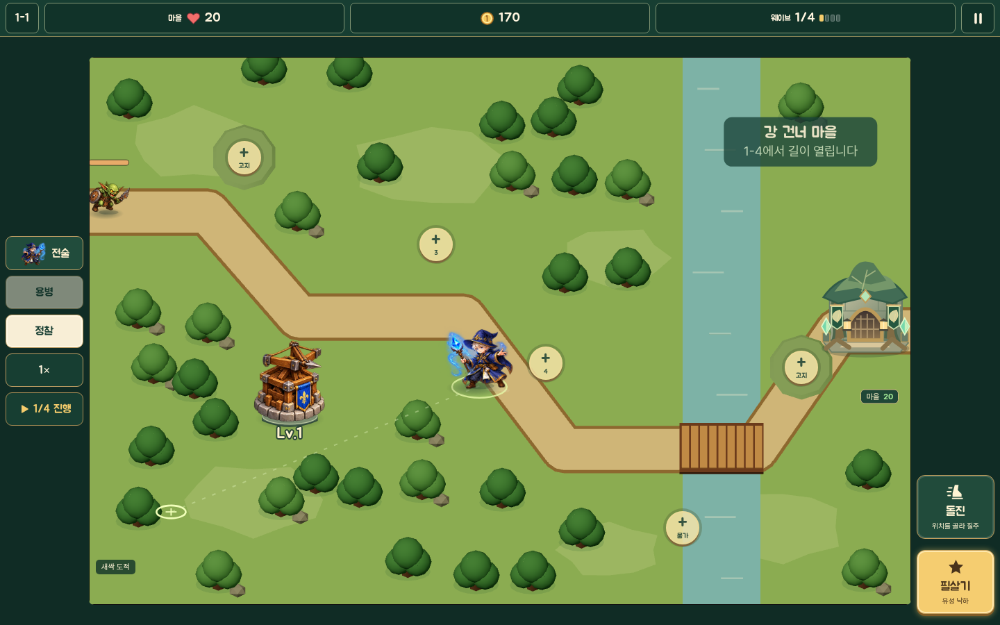

게임 핵심 흐름
영웅을 움직이고 타워와 동료를 조합해 마을을 지키는 모바일 판타지 디펜스
마을
구조 요청을 확인하고 다음 원정을 고릅니다.
출전 준비
영웅을 고르고 타워 조합을 계획합니다.
방어 전투
영웅을 이동하고 타워와 기술로 적을 막습니다.
결과·보상
방어 결과와 실제 획득 보상을 확인합니다.
마을 성장
동료 합류와 강화로 다음 원정을 준비합니다.
다음 요청으로 이어지는 성장 순환
게임의 중심부터 3D 제작과 검증까지 · 2026-11-11 기준
영웅을 움직이고 타워와 동료를 조합해 마을을 지키는 모바일 판타지 디펜스
구조 요청을 확인하고 다음 원정을 고릅니다.
영웅을 고르고 타워 조합을 계획합니다.
영웅을 이동하고 타워와 기술로 적을 막습니다.
방어 결과와 실제 획득 보상을 확인합니다.
동료 합류와 강화로 다음 원정을 준비합니다.
세계관·자산·게임 규칙의 출처를 맞춥니다.
숲에서 영웅·타워·적을 하나씩 연결합니다.
나머지 모델·속성·스테이지로 넓힙니다.
모바일 사용성·성능과 저장을 실기기에서 확인합니다.
모드 확장은 별도 채택과 검증 후 진행합니다. 번호는 일정이 아닌 선후 관계입니다.
현재 게임의 중심. 게임 상태와 보상은 기존 엔진이 관리합니다.
6영웅, 직접 이동, 자동 공격, 돌진·필살기와 용병·펫.
석궁·마법·포격 3종, 강화와 속성별 분기.
나무·얼음·돌·금속 등의 재료 상성과 숲·설산 지형.
구조 요청, 동료 합류, 보상과 공용 강화. 테마 4종은 외형 선택.
아래 수치와 규칙은 독립 시제품 기준입니다. 정식 채택·보상 연동은 미정입니다.
영웅 직접 이동 없이 타워를 세우고 3웨이브에서 성문을 방어합니다.
영웅과 지원병을 이동해 타워를 세우고 봉화를 점령하며 방어합니다.
영웅을 직접 조작해 적을 처치하고 수정을 모아 출구로 이동합니다.
지역의 문화와 재질을 살린 판타지. 브롤스타즈는 전장 배치와 가독성의 참고입니다.
이안·리엘·브론·청운·카르·루나의 체형, 무기, 소재와 색을 구분합니다.
발리스타의 나무와 금속, 마법탑의 석재와 수정, 포격탑의 금속 구조를 강조합니다.
재료별 실루엣, 공격 예고와 피격 상태를 작은 화면에서 구분합니다.
3D 길·고도·물길과 터치 좌표를 맞추고 적·영웅·타워의 가림을 검증합니다.
화면은 현재 3D 지형 브랜치의 검증 캡처입니다.

숲 지형: 3D 메시 · 영웅·타워·적: 기존 스프라이트. 실시간 3D 유닛 연결은 다음 단계입니다.
날짜가 아닌 검증 순서입니다. 현재 코드와 제안을 구분합니다.
브랜치별 모델·이미지·규칙의 출처와 충돌을 기록하고 기존 진행·저장 경계를 확인합니다.
숲 전장 1개에 영웅 1명, 타워 1종, 적 1종을 연결합니다. 타격 타이밍·발 접지·터치·저장이 기존 엔진과 일치해야 합니다.
영웅·타워 분기·적·보스와 숲·설산의 8스테이지로 늘리고 해금·보상·상성을 회귀 검증합니다.
HUD·사운드·설명과 함께 실제 Android의 FPS·발열·메모리, 복귀·저장, 화면 방향과 접근성을 확인합니다.
성문 방어·변경 지휘·수정 원정의 조작과 보상·저장 경계를 결정한 후 선택적으로 통합합니다.
진척률 대신 실제로 검증된 대상과 통과 증거를 기록합니다. 단계는 분야 전체가 아닌 모델·기능별로 판단합니다.
| 분야 | 현재 상태 | 다음 확인 척도 |
|---|---|---|
| 게임·모드 | 캠페인 구현, 세 모드는 별도 실험 | 모드별 조작·승패·보상·저장 경계 |
| 맵·카메라 | 3D 지형과 카메라 시안 | 경로·터치·사거리 일치, 가림·시야 비교 |
| 영웅·타워·적 | 캠페인은 스프라이트, GLB는 작업실 시안 | 대상별 피벗·재질·실루엣·접지와 동작 검증 |
| 전투·속성 | 엔진 구현, 애니메이션 매핑은 미연결 | 타격·투사체·상성·정지/동결 회귀 |
| 성장·저장 | 보상·성장 및 로컬 저장 구현 | 합법 진행, 중복 지급·복귀·기존 저장 검증 |
| UI·오디오 | 기존 HUD·터치·일부 효과음 구현 | 실제 화면의 조작·가독성·음소거와 복귀 |
| 세계관·문화 | 숲·설산·거점 테마와 확장 시안 | 지역별 소재·건축·무기, 확정과 후보 분리 |
| 성능·플랫폼 | 브라우저 검사, Android 실기기 미측정 | 기기별 FPS·프레임 시간·메모리·발열 |
| 운영·에셋·AI | 이미지 검토 도구, Patch 공개 검색 확인 | 원본·라이선스·호출·사용량·실제 비용 |